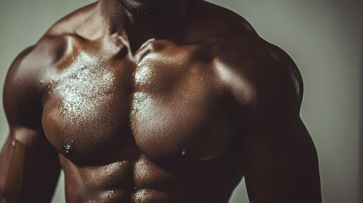

Chest Workout

Workout Information
1) Bench Press
- Sets: 4
- Reps: 8-12
- Rest: 60-90 seconds between sets
- Primary muscles targeted: Middle chest, shoulders, triceps
2) Inclined Bench Press
- Sets: 3
- Reps: 8-10
- Rest: 60-90 seconds between sets
- Primary muscles targeted: Upper chest, shoulders, triceps
3) Smith Machine Inclined Press
- Sets: 3
- Reps: 8-10
- Rest: 60-90 seconds between sets
- Primary muscles targeted: Upper chest, shoulders, triceps
4) Chest Press
- Sets: 3
- Reps: 8-10
- Rest: 60-90 seconds between sets
- Primary muscles targeted: Middle chest, triceps, shoulders
5) Dumbbell Press
- Sets: 3
- Reps: 8-10
- Rest: 60-90 seconds between sets
- Primary muscles targeted: Chest, shoulders, triceps
6) Dips
- Sets: 3
- Reps: 8-12
- Rest: 60-90 seconds between sets
- Primary muscles targeted: Lower chest, triceps, shoulders
7) Push-Ups
- Sets: 3
- Reps: 10-15
- Rest: 60 seconds between sets
- Primary muscles targeted: Chest, triceps, shoulders
8) Pec Fly
- Sets: 3
- Reps: 10-12
- Rest: 60-90 seconds between sets
- Primary muscles targeted: Chest, shoulders
9) High Cable Crossover
- Sets: 3
- Reps: 10-12
- Rest: 60 seconds between sets
- Primary muscles targeted: Upper chest, shoulders
10) Low Cable Crossover
- Sets: 3
- Reps: 10-12
- Rest: 60 seconds between sets
- Primary muscles targeted: Lower chest, shoulders